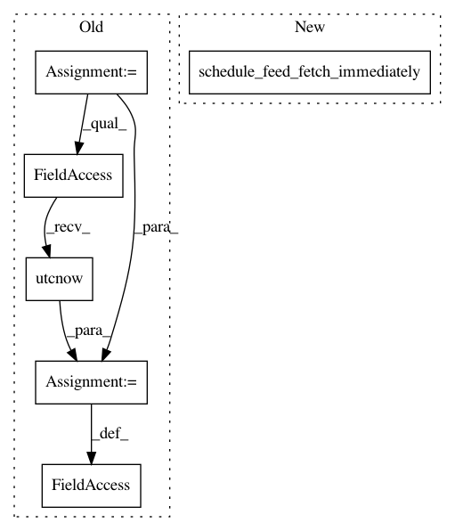

ba5919d7600a8d6c2300b7c7fc71a23731ede2b6,apps/rss_feeds/views.py,,exception_change_feed_link,#Any#,323
Before Change
feed.fetched_once = False
feed.feed_link = feed_link
feed.feed_address = feed_address
feed.next_scheduled_update = datetime.datetime.utcnow()
duplicate_feed = feed.save()
if duplicate_feed:
new_feed = Feed.objects.get(pk=duplicate_feed.pk)
feed = new_feed
After Change
if duplicate_feed:
new_feed = Feed.objects.get(pk=duplicate_feed.pk)
feed = new_feed
new_feed.schedule_feed_fetch_immediately()
new_feed.has_page_exception = False
new_feed.active = True
new_feed.save()
else:
In pattern: SUPERPATTERN
Frequency: 3
Non-data size: 6
Instances
Project Name: samuelclay/NewsBlur
Commit Name: ba5919d7600a8d6c2300b7c7fc71a23731ede2b6
Time: 2013-03-30
Author: samuel@ofbrooklyn.com
File Name: apps/rss_feeds/views.py
Class Name:
Method Name: exception_change_feed_link
Project Name: samuelclay/NewsBlur
Commit Name: ba5919d7600a8d6c2300b7c7fc71a23731ede2b6
Time: 2013-03-30
Author: samuel@ofbrooklyn.com
File Name: apps/rss_feeds/views.py
Class Name:
Method Name: exception_retry
Project Name: samuelclay/NewsBlur
Commit Name: ba5919d7600a8d6c2300b7c7fc71a23731ede2b6
Time: 2013-03-30
Author: samuel@ofbrooklyn.com
File Name: apps/rss_feeds/views.py
Class Name:
Method Name: exception_change_feed_address